CODING AGENTS AS PIXEL WORLD MODELS
traex/DeepSeek-V4.1-Flash · 0050
点击播放 · 原生 RGB 像素
逐轮保存的候选
回放视频、检查图与代码变化。
每份候选均可单独播放。实际图片检查记录在下方工具轨迹中。
候选 01播放与检查图
点击播放 · 原生 RGB 像素
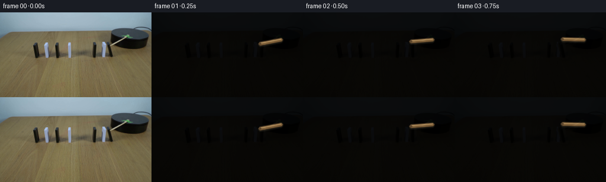
展开代码变化
--- 上一保存版本
+++ 本次保存版本
@@ -0,0 +1,198 @@
+from pathlib import Path
+
+import cv2
+import numpy as np
+from PIL import Image
+
+import artifact_io
+
+
+ROOT = Path(__file__).resolve().parent
+W, H = 256, 144
+N, FPS = 20, 4
+
+
+def alpha_blend(dst, src, alpha):
+ alpha = np.asarray(alpha, dtype=np.float32)
+ if alpha.ndim == 2:
+ alpha = alpha[:, :, None]
+ return (src.astype(np.float32) * alpha + dst.astype(np.float32) * (1.0 - alpha)).clip(
+ 0, 255
+ ).astype(np.uint8)
+
+
+def clean_plate(first):
+ """Remove the three right dominoes and the stick from the photographed plate."""
+ mask = np.zeros((H, W), dtype=np.uint8)
+ mask[45:82, 150:195] = 255
+ cv2.fillPoly(
+ mask,
+ [np.array([(179, 52), (218, 45), (221, 50), (187, 61)], dtype=np.int32)],
+ 255,
+ )
+ plate = cv2.inpaint(first, mask, 4, cv2.INPAINT_TELEA)
+
+ # Feather the repair slightly so the smooth tabletop does not show a hard patch.
+ feather = cv2.GaussianBlur(mask, (0, 0), 1.1).astype(np.float32) / 255.0
+ feather *= 0.82
+ return alpha_blend(first, plate, feather[:, :, None])
+
+
+def extract_sprite(image, bbox, polygon, pivot):
+ x1, y1, x2, y2 = bbox
+ crop = image[y1:y2, x1:x2].copy()
+ mask = np.zeros(crop.shape[:2], dtype=np.uint8)
+ local = np.array(polygon, dtype=np.int32) - np.array([x1, y1], dtype=np.int32)
+ cv2.fillPoly(mask, [local], 255)
+ mask = cv2.GaussianBlur(mask, (3, 3), 0.45)
+ alpha = mask.astype(np.float32) / 255.0
+
+ # Suppress table-colored pixels just inside the polygon boundary.
+ r, g, b = (crop[:, :, i].astype(np.int16) for i in range(3))
+ table_like = (r > 98) & (r > b + 18) & (g > 65)
+ alpha[table_like & (mask < 210)] *= 0.25
+
+ rgba = np.dstack([crop, (alpha * 255).round().astype(np.uint8)])
+ return rgba, (pivot[0] - x1, pivot[1] - y1)
+
+
+def soft_ellipse(canvas, center, axes, color, opacity):
+ layer = np.zeros_like(canvas)
+ cv2.ellipse(layer, center, axes, 0, 0, 360, color, -1, cv2.LINE_AA)
+ blur = max(1.2, axes[0] * 0.28)
+ layer = cv2.GaussianBlur(layer, (0, 0), blur)
+ return alpha_blend(canvas, layer, opacity * (layer.max(axis=2) / 255.0)[:, :, None])
+
+
+def transform_sprite(canvas, rgba, pivot, base, angle, scale=1.0, opacity=1.0):
+ h, w = rgba.shape[:2]
+ px, py = pivot
+ matrix = cv2.getRotationMatrix2D((float(px), float(py)), float(angle), float(scale))
+ matrix[0, 2] += base[0] - pivot[0]
+ matrix[1, 2] += base[1] - pivot[1]
+ warped = cv2.warpAffine(
+ rgba,
+ matrix,
+ (W, H),
+ flags=cv2.INTER_LINEAR,
+ borderMode=cv2.BORDER_CONSTANT,
+ borderValue=(0, 0, 0, 0),
+ )
+ alpha = warped[:, :, 3].astype(np.float32) / 255.0 * opacity
+ return alpha_blend(canvas, warped[:, :, :3], alpha[:, :, None])
+
+
+def draw_rod(canvas, angle_deg):
+ layer = np.zeros_like(canvas)
+ hub = np.array([219.0, 46.5])
+ length = 37.0
+ theta = np.deg2rad(angle_deg)
+ tip = hub + length * np.array([np.cos(theta), np.sin(theta)])
+ p0 = tuple(np.round(hub).astype(int))
+ p1 = tuple(np.round(tip).astype(int))
+
+ cv2.line(layer, (p0[0], p0[1] + 2), (p1[0], p1[1] + 2), (18, 17, 13), 5, cv2.LINE_AA)
+ cv2.line(layer, p0, p1, (54, 43, 29), 5, cv2.LINE_AA)
+ cv2.line(layer, p0, p1, (129, 96, 56), 3, cv2.LINE_AA)
+
+ normal = np.array([-np.sin(theta), np.cos(theta)])
+ off = np.round(normal * 0.75).astype(int)
+ q0 = (p0[0] + off[0], p0[1] + off[1])
+ q1 = (p1[0] + off[0], p1[1] + off[1])
+ cv2.line(layer, q0, q1, (194, 157, 104), 1, cv2.LINE_AA)
+ cv2.circle(layer, p1, 2, (93, 69, 42), -1, cv2.LINE_AA)
+ return alpha_blend(canvas, layer, 0.93)
+
+
+def fall_angle(frame, start, duration):
+ u = (frame - start) / duration
+ if u <= 0:
+ return 0.0, 0.0
+ if u < 1:
+ angle = 88.5 * (u ** 1.75)
+ velocity = 88.5 * 1.75 * max(u, 1e-4) ** 0.75 / duration
+ return angle, velocity
+ # A very small settle oscillation avoids a dead, mechanically frozen final pose.
+ v = frame - (start + duration)
+ angle = 88.5 - 1.1 * np.exp(-v * 1.7) * np.sin(v * 2.1)
+ return angle, 0.0
+
+
+def main():
+ first = np.asarray(Image.open(ROOT / "first_frame.png").convert("RGB"), dtype=np.uint8)
+ plate = clean_plate(first)
+
+ black, black_pivot = extract_sprite(
+ first,
+ (152, 47, 169, 81),
+ [(157, 49), (163, 49), (166, 52), (166, 77), (164, 79), (158, 79), (155, 77), (155, 52)],
+ (161.0, 79.0),
+ )
+ white, white_pivot = extract_sprite(
+ first,
+ (167, 47, 183, 81),
+ [(172, 49), (179, 49), (181, 52), (180, 77), (178, 79), (173, 79), (171, 77), (171, 52)],
+ (175.5, 79.0),
+ )
+
+ frames = np.empty((N, H, W, 3), dtype=np.uint8)
+ frames[0] = first
+
+ dominoes = [
+ # Sprite, initial base, fall start (frames), duration (frames), scale.
+ ("black", np.array([161.0, 79.0]), 5.25, 5.4, 1.00),
+ ("white", np.array([175.5, 79.0]), 3.20, 5.3, 1.00),
+ ("black", np.array([187.6, 78.5]), 1.10, 5.1, 1.03),
+ ]
+
+ for frame in range(1, N):
+ canvas = plate.copy()
+
+ # Contact shadows remain fixed to the table while the tiles rotate.
+ for _, base, _, _, scale in dominoes:
+ axes = (round(7.0 * scale), 3)
+ canvas = soft_ellipse(
+ canvas,
+ (int(round(base[0] - 1)), int(round(base[1]))),
+ axes,
+ (38, 27, 15),
+ 0.38,
+ )
+
+ # Draw from left to right; the falling rightmost tile reads as the nearest face.
+ for kind, base, start, duration, scale in dominoes:
+ angle, velocity = fall_angle(frame, start, duration)
+ shift = 1.35 * np.sin(np.deg2rad(angle)) ** 2
+ moving_base = (base[0] - shift, base[1])
+ sprite, pivot = (black, black_pivot) if kind == "black" else (white, white_pivot)
+
+ if velocity > 9.0:
+ prev_angle, _ = fall_angle(frame - 0.24, start, duration)
+ prev_shift = 1.35 * np.sin(np.deg2rad(prev_angle)) ** 2
+ canvas = transform_sprite(
+ canvas,
+ sprite,
+ pivot,
+ (base[0] - prev_shift, base[1]),
+ prev_angle,
+ scale,
+ opacity=0.18,
+ )
+ canvas = transform_sprite(canvas, sprite, pivot, moving_base, angle, scale)
+
+ lever_angle = 163.8
+ if frame <= 8:
+ lever_angle += 6.0 * frame
+ else:
+ lever_angle += 48.0 + 1.1 * (frame - 8)
+ canvas = draw_rod(canvas, lever_angle)
+ frames[frame] = canvas
+
+ # Frame zero is guaranteed to be the exact supplied source, not a reconstruction.
+ frames[0] = first
+ assert np.array_equal(frames[0], first)
+ artifact_io.save(frames, ROOT)
+
+
+if __name__ == "__main__":
+ main()
候选 02播放与检查图
点击播放 · 原生 RGB 像素
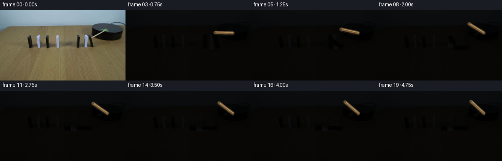
展开代码变化
--- 上一保存版本
+++ 本次保存版本
@@ -38,24 +38,6 @@
return alpha_blend(first, plate, feather[:, :, None])
-def extract_sprite(image, bbox, polygon, pivot):
- x1, y1, x2, y2 = bbox
- crop = image[y1:y2, x1:x2].copy()
- mask = np.zeros(crop.shape[:2], dtype=np.uint8)
- local = np.array(polygon, dtype=np.int32) - np.array([x1, y1], dtype=np.int32)
- cv2.fillPoly(mask, [local], 255)
- mask = cv2.GaussianBlur(mask, (3, 3), 0.45)
- alpha = mask.astype(np.float32) / 255.0
-
- # Suppress table-colored pixels just inside the polygon boundary.
- r, g, b = (crop[:, :, i].astype(np.int16) for i in range(3))
- table_like = (r > 98) & (r > b + 18) & (g > 65)
- alpha[table_like & (mask < 210)] *= 0.25
-
- rgba = np.dstack([crop, (alpha * 255).round().astype(np.uint8)])
- return rgba, (pivot[0] - x1, pivot[1] - y1)
-
-
def soft_ellipse(canvas, center, axes, color, opacity):
layer = np.zeros_like(canvas)
cv2.ellipse(layer, center, axes, 0, 0, 360, color, -1, cv2.LINE_AA)
@@ -64,22 +46,74 @@
return alpha_blend(canvas, layer, opacity * (layer.max(axis=2) / 255.0)[:, :, None])
-def transform_sprite(canvas, rgba, pivot, base, angle, scale=1.0, opacity=1.0):
- h, w = rgba.shape[:2]
- px, py = pivot
- matrix = cv2.getRotationMatrix2D((float(px), float(py)), float(angle), float(scale))
- matrix[0, 2] += base[0] - pivot[0]
- matrix[1, 2] += base[1] - pivot[1]
- warped = cv2.warpAffine(
- rgba,
- matrix,
- (W, H),
- flags=cv2.INTER_LINEAR,
- borderMode=cv2.BORDER_CONSTANT,
- borderValue=(0, 0, 0, 0),
- )
- alpha = warped[:, :, 3].astype(np.float32) / 255.0 * opacity
- return alpha_blend(canvas, warped[:, :, :3], alpha[:, :, None])
+def project_box_point(base, u, v, w, angle, depth_x, depth_y):
+ """Project a local box point and lean it counter-clockwise about its base."""
+ theta = np.deg2rad(angle)
+ dx = u + depth_x * w
+ dy = -v + depth_y * w
+ x = base[0] + dx * np.cos(theta) + dy * np.sin(theta)
+ y = base[1] - dx * np.sin(theta) + dy * np.cos(theta)
+ return int(round(x * 4)), int(round(y * 4))
+
+
+def draw_domino(canvas, base, angle, kind, scale=1.0, opacity=1.0):
+ """Render a small beveled rectangular prism with supersampled edges."""
+ if kind == "black":
+ front = (31, 28, 21)
+ side = (16, 16, 12)
+ top = (73, 66, 50)
+ edge = (104, 94, 71)
+ else:
+ front = (169, 168, 162)
+ side = (103, 103, 100)
+ top = (218, 218, 210)
+ edge = (235, 236, 228)
+
+ hw = 3.15 * scale
+ height = 29.1 * scale
+ depth_x, depth_y = 2.25 * scale, -0.52 * scale
+
+ def point(u, v, w):
+ return project_box_point(base, u, v, w, angle, depth_x, depth_y)
+
+ front_face = np.array(
+ [point(-hw, 0, 0), point(hw, 0, 0), point(hw, height, 0), point(-hw, height, 0)],
+ dtype=np.int32,
+ )
+ side_face = np.array(
+ [point(hw, 0, 0), point(hw, 0, 1), point(hw, height, 1), point(hw, height, 0)],
+ dtype=np.int32,
+ )
+ top_face = np.array(
+ [
+ point(-hw, height, 0),
+ point(hw, height, 0),
+ point(hw, height, 1),
+ point(-hw, height, 1),
+ ],
+ dtype=np.int32,
+ )
+
+ layer = np.zeros((H * 4, W * 4, 3), dtype=np.uint8)
+ cv2.fillPoly(layer, [front_face], front, cv2.LINE_AA)
+ cv2.fillPoly(layer, [side_face], side, cv2.LINE_AA)
+ cv2.fillPoly(layer, [top_face], top, cv2.LINE_AA)
+ cv2.polylines(layer, [front_face], True, edge, 2, cv2.LINE_AA)
+ cv2.polylines(layer, [side_face], True, side, 2, cv2.LINE_AA)
+ cv2.polylines(layer, [top_face], True, edge, 2, cv2.LINE_AA)
+
+ # A narrow front highlight and base shade make the tiny faces read as solid.
+ left_edge = np.array([front_face[0], front_face[3]], dtype=np.int32)
+ cv2.line(layer, tuple(left_edge[0]), tuple(left_edge[1]), edge, 2, cv2.LINE_AA)
+ small = cv2.resize(layer, (W, H), interpolation=cv2.INTER_AREA)
+
+ mask = np.zeros((H * 4, W * 4), dtype=np.uint8)
+ cv2.fillPoly(mask, [front_face], 255, cv2.LINE_AA)
+ cv2.fillPoly(mask, [side_face], 255, cv2.LINE_AA)
+ cv2.fillPoly(mask, [top_face], 255, cv2.LINE_AA)
+ alpha = cv2.resize(mask, (W, H), interpolation=cv2.INTER_AREA)
+ alpha = alpha.astype(np.float32) / 255.0 * opacity
+ return alpha_blend(canvas, small, alpha[:, :, None])
def draw_rod(canvas, angle_deg):
@@ -122,24 +156,11 @@
first = np.asarray(Image.open(ROOT / "first_frame.png").convert("RGB"), dtype=np.uint8)
plate = clean_plate(first)
- black, black_pivot = extract_sprite(
- first,
- (152, 47, 169, 81),
- [(157, 49), (163, 49), (166, 52), (166, 77), (164, 79), (158, 79), (155, 77), (155, 52)],
- (161.0, 79.0),
- )
- white, white_pivot = extract_sprite(
- first,
- (167, 47, 183, 81),
- [(172, 49), (179, 49), (181, 52), (180, 77), (178, 79), (173, 79), (171, 77), (171, 52)],
- (175.5, 79.0),
- )
-
frames = np.empty((N, H, W, 3), dtype=np.uint8)
frames[0] = first
dominoes = [
- # Sprite, initial base, fall start (frames), duration (frames), scale.
+ # Color, initial base, fall start (frames), duration (frames), scale.
("black", np.array([161.0, 79.0]), 5.25, 5.4, 1.00),
("white", np.array([175.5, 79.0]), 3.20, 5.3, 1.00),
("black", np.array([187.6, 78.5]), 1.10, 5.1, 1.03),
@@ -164,21 +185,19 @@
angle, velocity = fall_angle(frame, start, duration)
shift = 1.35 * np.sin(np.deg2rad(angle)) ** 2
moving_base = (base[0] - shift, base[1])
- sprite, pivot = (black, black_pivot) if kind == "black" else (white, white_pivot)
if velocity > 9.0:
prev_angle, _ = fall_angle(frame - 0.24, start, duration)
prev_shift = 1.35 * np.sin(np.deg2rad(prev_angle)) ** 2
- canvas = transform_sprite(
+ canvas = draw_domino(
canvas,
- sprite,
- pivot,
(base[0] - prev_shift, base[1]),
prev_angle,
+ kind,
scale,
opacity=0.18,
)
- canvas = transform_sprite(canvas, sprite, pivot, moving_base, angle, scale)
+ canvas = draw_domino(canvas, moving_base, angle, kind, scale)
lever_angle = 163.8
if frame <= 8:
候选 03播放与检查图
点击播放 · 原生 RGB 像素

展开代码变化
--- 上一保存版本
+++ 本次保存版本
@@ -116,6 +116,17 @@
return alpha_blend(canvas, small, alpha[:, :, None])
+def draw_source_domino(canvas, source, bbox, polygon):
+ """Keep the photographed tile pixels intact until its lean is visible."""
+ x1, y1, x2, y2 = bbox
+ mask = np.zeros((H, W), dtype=np.uint8)
+ cv2.fillPoly(mask, [np.array(polygon, dtype=np.int32)], 255)
+ region = mask[y1:y2, x1:x2]
+ result = canvas.copy()
+ result[y1:y2, x1:x2][region > 0] = source[y1:y2, x1:x2][region > 0]
+ return result
+
+
def draw_rod(canvas, angle_deg):
layer = np.zeros_like(canvas)
hub = np.array([219.0, 46.5])
@@ -135,6 +146,9 @@
q1 = (p1[0] + off[0], p1[1] + off[1])
cv2.line(layer, q0, q1, (194, 157, 104), 1, cv2.LINE_AA)
cv2.circle(layer, p1, 2, (93, 69, 42), -1, cv2.LINE_AA)
+ cv2.circle(layer, p0, 3, (31, 39, 28), -1, cv2.LINE_AA)
+ cv2.circle(layer, p0, 2, (67, 120, 65), -1, cv2.LINE_AA)
+ cv2.circle(layer, (p0[0] - 1, p0[1] - 1), 1, (179, 201, 165), -1, cv2.LINE_AA)
return alpha_blend(canvas, layer, 0.93)
@@ -160,17 +174,47 @@
frames[0] = first
dominoes = [
- # Color, initial base, fall start (frames), duration (frames), scale.
- ("black", np.array([161.0, 79.0]), 5.25, 5.4, 1.00),
- ("white", np.array([175.5, 79.0]), 3.20, 5.3, 1.00),
- ("black", np.array([187.6, 78.5]), 1.10, 5.1, 1.03),
+ # Color, initial base, fall start, duration, scale, source patch.
+ (
+ "black",
+ np.array([161.0, 79.0]),
+ 5.25,
+ 5.4,
+ 1.00,
+ (
+ (152, 47, 169, 81),
+ [(157, 49), (163, 49), (166, 52), (166, 77), (164, 79), (158, 79), (155, 77), (155, 52)],
+ ),
+ ),
+ (
+ "white",
+ np.array([175.5, 79.0]),
+ 3.20,
+ 5.3,
+ 1.00,
+ (
+ (167, 47, 183, 81),
+ [(172, 49), (179, 49), (181, 52), (180, 77), (178, 79), (173, 79), (171, 77), (171, 52)],
+ ),
+ ),
+ (
+ "black",
+ np.array([187.6, 78.5]),
+ 1.10,
+ 5.1,
+ 1.03,
+ (
+ (178, 43, 195, 81),
+ [(181, 50), (188, 50), (192, 54), (190, 77), (185, 79), (181, 77)],
+ ),
+ ),
]
for frame in range(1, N):
canvas = plate.copy()
# Contact shadows remain fixed to the table while the tiles rotate.
- for _, base, _, _, scale in dominoes:
+ for _, base, _, _, scale, _ in dominoes:
axes = (round(7.0 * scale), 3)
canvas = soft_ellipse(
canvas,
@@ -181,11 +225,14 @@
)
# Draw from left to right; the falling rightmost tile reads as the nearest face.
- for kind, base, start, duration, scale in dominoes:
+ for kind, base, start, duration, scale, source_patch in dominoes:
angle, velocity = fall_angle(frame, start, duration)
shift = 1.35 * np.sin(np.deg2rad(angle)) ** 2
moving_base = (base[0] - shift, base[1])
+ if angle < 5.8:
+ canvas = draw_source_domino(canvas, first, *source_patch)
+ continue
if velocity > 9.0:
prev_angle, _ = fall_angle(frame - 0.24, start, duration)
prev_shift = 1.35 * np.sin(np.deg2rad(prev_angle)) ** 2
可观测工具轨迹
实际执行的命令与返回图片。
命令 1exit 0
/bin/bash -c "pwd && rg --files -g '"'!*.png'"' -g '"'!*.jpg'"' -g '"'!*.jpeg'"' -g '"'!*.mp4'"' -g '"'!*.webm'"'"
命令 2exit 0
/bin/bash -c 'cat prompt.txt'
命令 3exit 0
/bin/bash -c 'cat GENERATION_RULES.md'
命令 4exit 0
/bin/bash -c 'ls -lah && find . -maxdepth 2 -type f | sort'
命令 5exit 0
/bin/bash -c "sed -n '1,240p' artifact_io.py"
命令 6exit 0
/bin/bash -c "python - <<'PY' import importlib.util for m in ['numpy','PIL','cv2','scipy','imageio','matplotlib']: print(m, bool(importlib.util.find_spec(m))) PY"
命令 7exit 0
/bin/bash -c "sed -n '1,260p' player_template.html"
命令 8exit 0
/bin/bash -c "python - <<'PY'
from PIL import Image
im=Image.open('first_frame.png')
for name,box in [('objects',(45,35,250,100)),('left',(50,45,125,90)),('right',(150,45,230,90)),('lever',(175,30,245,85))]:
im.crop(box).resize(((box[2]-box[0])*6,(box[3]-box[1])*6)).save('.tmp/'+name+'.png')
print(im.size)
PY"命令 9exit 0
/bin/bash -c "python - <<'PY'
from PIL import Image
import numpy as np
im=np.array(Image.open('first_frame.png').convert('RGB'))
for name,(x1,y1,x2,y2) in {'leftblack':(55,50,68,83),'leftwhite':(73,50,86,83),'rightblack':(152,50,166,83),'rightwhite':(169,50,182,83),'lever':(185,55,232,72),'table':(130,90,150,110),'wall':(10,10,50,30)}.items():
a=im[y1:y2,x1:x2]
print(name, 'mean',a.mean((0,1)).round(1),'min',a.min((0,1)),'max',a.max((0,1)))
PY"命令 10exit 0
/bin/bash -c "python - <<'PY'
from PIL import Image
import numpy as np
im=np.array(Image.open('first_frame.png').convert('RGB'))
# Print grayscale/color profile and bounding boxes for likely masks in object region.
roi=im[38:95,45:240].astype(float)
# local background approx table median, classify dark or white
for name, cond in [
('dark', roi.max(2)<75),
('white', (roi.min(2)>95) & (roi.max(2)-roi.min(2)<55)),
('stick', (roi[:,:,0]>105)&(roi[:,:,0]-roi[:,:,2]>18)&(roi[:,:,0]>roi[:,:,1]*1.12)),
]:
ys,xs=np.where(cond)
print(name, (xs.min()+45,ys.min()+38,xs.max()+45,ys.max()+38),len(xs))
# per x counts
PY"命令 11exit 0
/bin/bash -c "python - <<'PY'
import cv2, numpy as np
from PIL import Image
im=np.array(Image.open('first_frame.png').convert('RGB'))
# inspect connected comps for dark and white masks in x 45:240 y 35:95
for name,mask in [('dark',(im.max(2)<92)&(np.indices(im.shape[:2])[0]>=40)&(np.indices(im.shape[:2])[0]<92)&(np.indices(im.shape[:2])[1]>=45)&(np.indices(im.shape[:2])[1]<240)),('white',(im[:,:,2].astype(int)>im[:,:,0].astype(int)-18)&(im.min(2)>80)&(np.indices(im.shape[:2])[0]>=45)&(np.indices(im.shape[:2])[0]<90)&(np.indices(im.shape[:2])[1]>=45)&(np.indices(im.shape[:2])[1]<240))]:
n,lab,stats,cents=cv2.connectedComponentsWithStats(mask.astype('uint8'),8)
print(name)
for s,c in zip(stats[1:],cents[1:]):
x,y,w,h,a=s
if a>20: print(tuple(s),tuple(np.round(c,1)))
PY"命令 12exit 0
/bin/bash -c "python - <<'PY'
from PIL import Image
im=Image.open('first_frame.png')
for name,box in [('d0',(180,47,193,82)),('d1',(167,47,182,82)),('d2',(152,48,168,82))]:
im.crop(box).resize(((box[2]-box[0])*20,(box[3]-box[1])*20),Image.Resampling.NEAREST).save('.tmp/'+name+'_pix.png')
PY"命令 13exit 0
/bin/bash -c "python - <<'PY'
from PIL import Image
im=Image.open('first_frame.png')
im.crop((0,0,256,144)).resize((1024,576),Image.Resampling.NEAREST).save('.tmp/full_nearest.png')
PY"命令 14exit 0
/bin/bash -c "python - <<'PY'
from PIL import Image, ImageDraw
import numpy as np, cv2
im=np.array(Image.open('first_frame.png').convert('RGB'))
mask=np.zeros((144,256),np.uint8)
polys=[
[(55,49),(64,49),(66,51),(66,78),(62,79),(55,78)],
[(72,48),(81,48),(83,50),(83,77),(80,78),(73,77),(72,51)],
[(89,49),(99,49),(102,51),(101,77),(98,79),(90,78),(89,51)],
[(114,48),(121,48),(122,50),(122,77),(116,78),(114,51)],
[(151,49),(161,49),(166,52),(165,77),(158,79),(152,78),(151,51)],
[(168,48),(178,48),(180,50),(179,77),(171,78),(169,51)],
[(181,50),(188,50),(191,53),(190,77),(184,79),(180,76)],
[(186,54),(216,49),(218,52),(188,59)]
]
for p in polys: cv2.fillPoly(mask,[np.array(p,np.int32)],255)
# remove stick only but keep platform: current masks includes stick over platform up to hub
# inpaint
bg=cv2.inpaint(im,mask,3,cv2.INPAINT_TELEA)
Image.fromarray(bg).save('.tmp/bg_inpaint.png')
Image.fromarray(np.dstack([mask]*3)).save('.tmp/mask.png')
PY"命令 15exit 0
/bin/bash -c "python - <<'PY'
from PIL import Image
im=Image.open('.tmp/bg_inpaint.png')
im.crop((40,30,245,95)).resize((1230,390),Image.Resampling.NEAREST).save('.tmp/bg_zoom.png')
PY"命令 16exit 1
/bin/bash -c "python - <<'PY'
from PIL import Image
import numpy as np
im=np.array(Image.open('first_frame.png').convert('RGB'))
# report per-row bounds for doms by threshold dark or white, excluding background
for x1,x2,name in [(52,68,'b1'),(71,84,'w1'),(88,103,'b2'),(112,123,'w2'),(150,167,'b3'),(167,181,'w3'),(180,193,'b4')]:
print(name)
for y in range(45,82):
a=im[y,x1:x2]
if a.max()<85 or (a.min()>85 and a[:,2]>a[:,0]-20):
print(y, x1, x2)
PY"命令 17exit 0
/bin/bash -c "python - <<'PY'
from PIL import Image
import numpy as np
im=np.array(Image.open('first_frame.png').convert('RGB'))
y,x=np.indices(im.shape[:2])
for name,box in {'b1':(52,68,48,80),'w1':(71,84,48,80),'b2':(88,103,48,80),'w2':(112,123,48,80),'b3':(150,167,48,80),'w3':(167,181,48,80),'b4':(180,193,48,80)}.items():
x1,x2,y1,y2=box
print(name)
for yy in range(y1,y2):
a=im[yy,x1:x2]
m=(a.max(1)<90)|((a.min(1)>85)&(a[:,2].astype(int)>a[:,0].astype(int)-20))
ids=np.where(m)[0]
if len(ids): print(yy, int(ids.min()+x1),int(ids.max()+x1),len(ids))
PY"命令 18exit 0
/bin/bash -c "python - <<'PY'
import cv2, numpy as np
from PIL import Image
im=np.array(Image.open('first_frame.png').convert('RGB'))
# save color crops with lanczos 10x for visual
for name,box in [('b1',(53,48,69,80)),('w1',(70,47,85,80)),('b2',(86,48,103,80)),('w2',(111,47,124,80)),('b3',(148,48,167,80)),('w3',(166,47,181,80)),('b4',(179,47,193,80)),('motor',(177,34,244,84))]:
x1,y1,x2,y2=box
Image.fromarray(im[y1:y2,x1:x2]).resize(((x2-x1)*15,(y2-y1)*15),Image.Resampling.NEAREST).save('.tmp/'+name+'_crop.png')
PY"命令 19exit 0
/bin/bash -c "python - <<'PY'
from PIL import Image
im=Image.open('first_frame.png')
im.crop((50,45,125,84)).resize((900,468),Image.Resampling.LANCZOS).save('.tmp/left_lanczos.png')
PY"命令 20exit 0
/bin/bash -c "python - <<'PY'
import cv2, numpy as np
from PIL import Image
im=np.array(Image.open('first_frame.png').convert('RGB'))
r,g,b=[im[:,:,i].astype(int) for i in range(3)]
dark=im.max(2)<105
white=(b>=r-25)&(im.min(2)>65)&(im.max(2)-im.min(2)<75)
mask=(dark|white).astype(np.uint8)*255
# restrict region object y 44:82 x 50:194
roi=np.zeros_like(mask); roi[44:82,50:194]=255; mask=cv2.bitwise_and(mask,roi)
# clean small and close
mask=cv2.morphologyEx(mask,cv2.MORPH_CLOSE,np.ones((3,3),np.uint8))
n,lab,stats,cents=cv2.connectedComponentsWithStats(mask,8)
out=np.zeros_like(mask)
for i in range(1,n):
if stats[i,cv2.CC_STAT_AREA]>25: out[lab==i]=255
Image.fromarray(out).save('.tmp/mask_thresh.png')
ov=im.copy(); ov[out>0]=(0,255,0)
Image.fromarray(ov).resize((1024,576),Image.Resampling.NEAREST).save('.tmp/mask_overlay.png')
print([tuple(stats[i]) for i in range(1,n) if stats[i,4]>25])
PY"命令 21exit 0
/bin/bash -c "python - <<'PY'
import cv2, numpy as np
from PIL import Image
im=np.array(Image.open('first_frame.png').convert('RGB'))
mask=np.zeros(im.shape[:2],np.uint8)
# right row rectangle incl shadows; stick polygon; extend slightly into disc
mask[44:83,149:196]=255
cv2.fillPoly(mask,[np.array([(183,54),(217,47),(220,51),(187,61)],np.int32)],255)
bg=cv2.inpaint(im,mask,5,cv2.INPAINT_TELEA)
Image.fromarray(bg).save('.tmp/bg_right_inpaint.png')
Image.fromarray(bg[30:95,135:245]).resize((1100,650),Image.Resampling.NEAREST).save('.tmp/bg_right_zoom.png')
PY"命令 22exit 0
/bin/bash -c "python - <<'PY'
from PIL import Image
im=Image.open('first_frame.png')
im.crop((135,40,195,84)).resize((1200,880),Image.Resampling.NEAREST).save('.tmp/right_objects_big.png')
PY"命令 23exit 0
/bin/bash -c "python - <<'PY'
from PIL import Image
im=Image.open('first_frame.png')
im.crop((35,42,205,90)).resize((1360,384),Image.Resampling.LANCZOS).save('.tmp/all_objects_lanczos.png')
PY"视觉工具实际返回图片 1

视觉工具实际返回图片 2
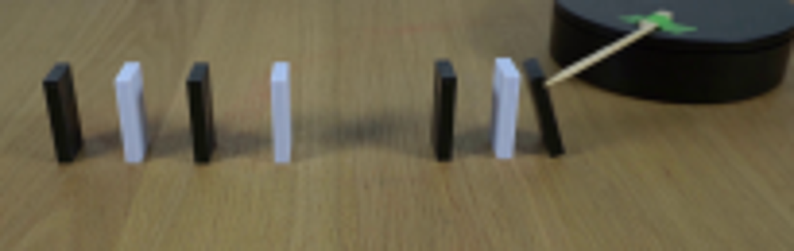
视觉工具实际返回图片 3
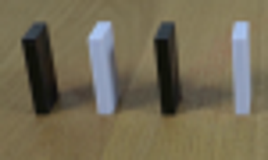
视觉工具实际返回图片 4
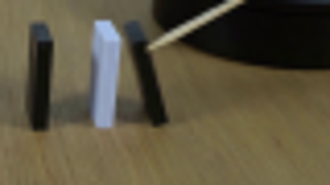
视觉工具实际返回图片 5
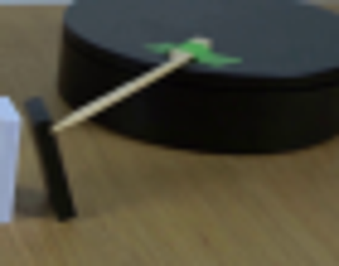
视觉工具实际返回图片 6
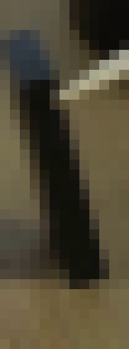
视觉工具实际返回图片 7
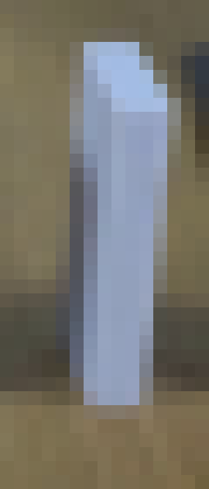
视觉工具实际返回图片 8
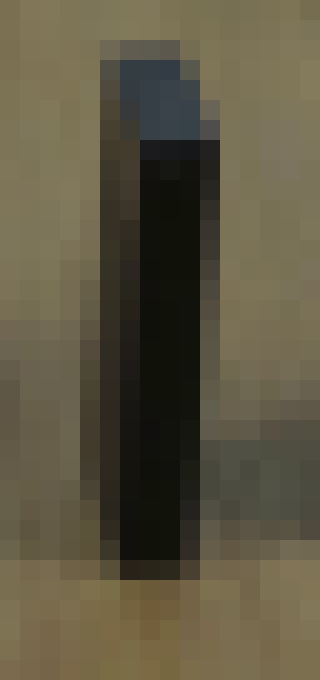
视觉工具实际返回图片 9
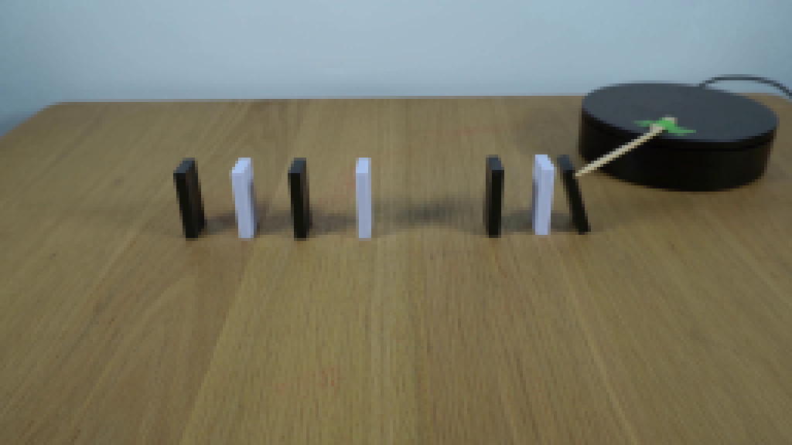
视觉工具实际返回图片 10
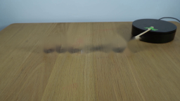
视觉工具实际返回图片 11
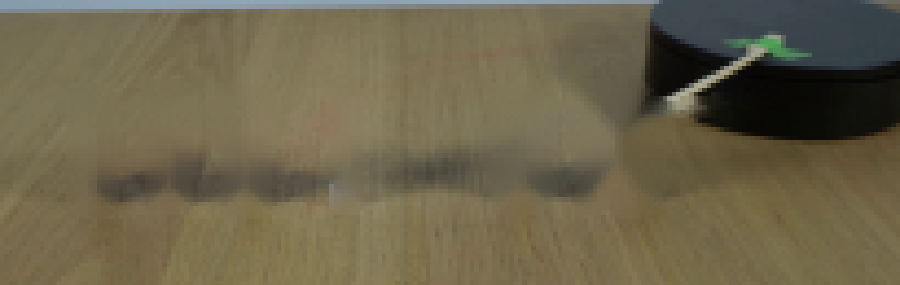
视觉工具实际返回图片 12
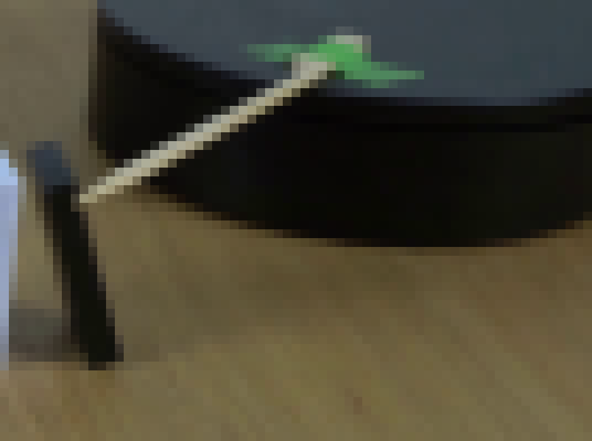
视觉工具实际返回图片 13
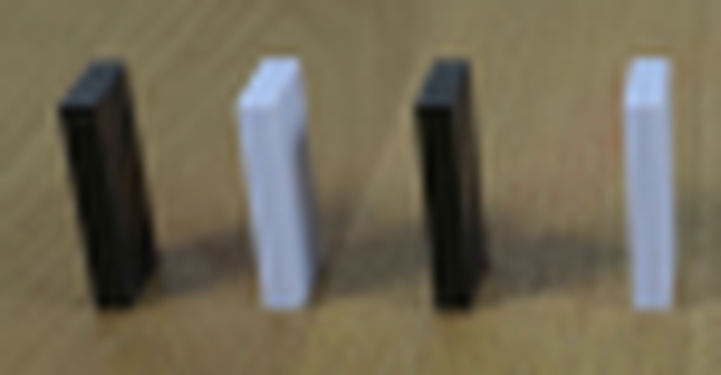
视觉工具实际返回图片 14
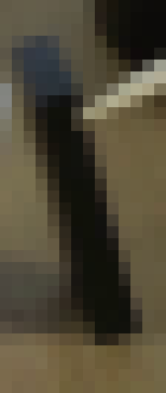
视觉工具实际返回图片 15
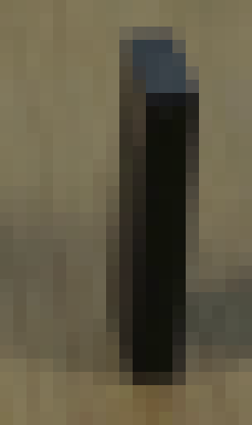
视觉工具实际返回图片 16
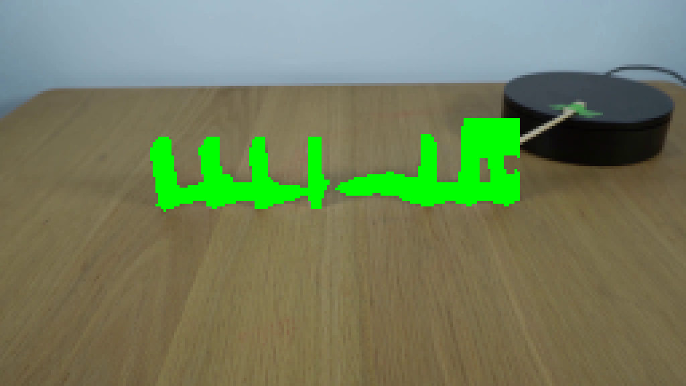
视觉工具实际返回图片 17
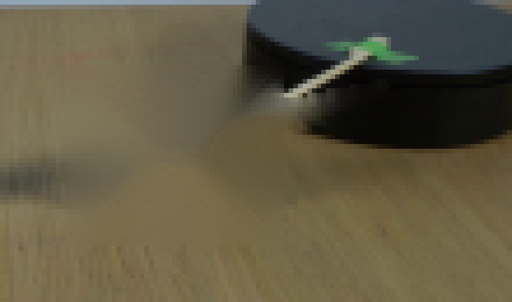
视觉工具实际返回图片 18
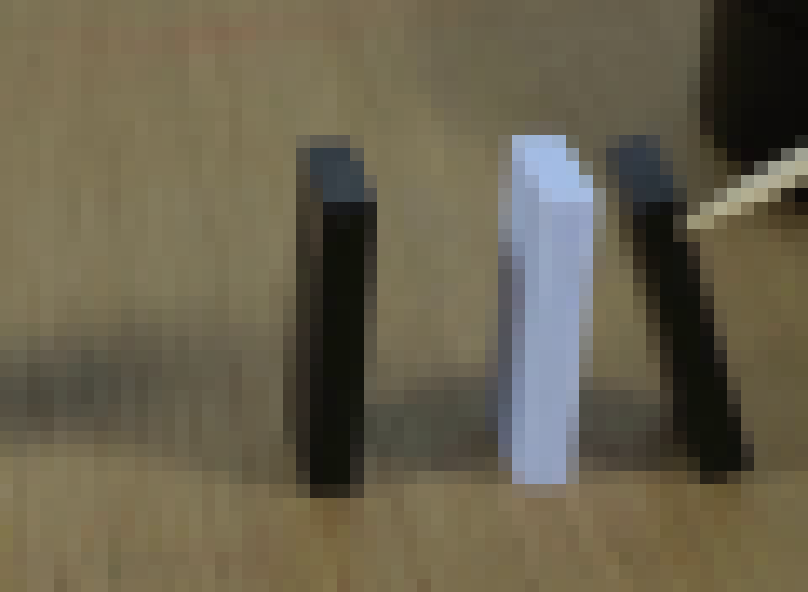
视觉工具实际返回图片 19
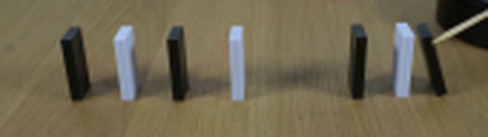
命令 24exit 0
/bin/bash -c "python - <<'PY'
import cv2, numpy as np
from PIL import Image
im=np.array(Image.open('first_frame.png').convert('RGB'))
mask=np.zeros(im.shape[:2],np.uint8)
boxes=[(151,47,168,80),(166,46,182,80),(178,45,194,80)]
for x1,y1,x2,y2 in boxes: mask[y1:y2,x1:x2]=255
cv2.fillPoly(mask,[np.array([(180,53),(218,47),(220,51),(187,60)],np.int32)],255)
# avoid platform interior except stick crossing; don't mask x>220
bg=cv2.inpaint(im,mask,3,cv2.INPAINT_TELEA)
Image.fromarray(bg).save('.tmp/bg_objects_inpaint.png')
Image.fromarray(bg[30:95,135:245]).resize((1100,650),Image.Resampling.NEAREST).save('.tmp/bg_objects_zoom.png')
PY"命令 25exit 0
/bin/bash -c "python - <<'PY'
from PIL import Image
im=Image.open('first_frame.png')
for name,box in [('b3x',(149,46,168,82)),('w3x',(165,45,182,82)),('b4x',(179,44,194,82)),('stickx',(178,42,222,65))]:
im.crop(box).resize(((box[2]-box[0])*20,(box[3]-box[1])*20),Image.Resampling.NEAREST).save('.tmp/'+name+'.png')
PY"命令 26exit 0
/bin/bash -c 'python generate.py'
命令 27exit 0
/bin/bash -c "python - <<'PY'
from PIL import Image
for i in [0,1,2,3,4,5,6,8,10,12,16,19]:
im=Image.open(f'frames/{i:02d}.png')
im.crop((135,38,230,90)).resize((760,416),Image.Resampling.NEAREST).save(f'.tmp/check_{i:02d}.png')
PY"命令 28exit 0
/bin/bash -c "python - <<'PY'
from PIL import Image
im=Image.open('first_frame.png')
for name,box in [('b4exact',(178,43,195,81)),('b3exact',(150,46,168,81)),('w3exact',(165,44,182,81))]:
im.crop(box).resize(((box[2]-box[0])*30,(box[3]-box[1])*30),Image.Resampling.NEAREST).save('.tmp/'+name+'.png')
PY"命令 29exit 0
/bin/bash -c "python - <<'PY'
from PIL import Image
import numpy as np
im=np.array(Image.open('first_frame.png').convert('RGB'))
# report exact pixels around right tile
for y in range(44,80):
vals=[]
for x in range(179,195):
r,g,b=map(int,im[y,x])
if max(r,g,b)<110 or (b>r-20 and min(r,g,b)>75): vals.append((x,(r,g,b)))
if vals: print(y,vals)
PY"命令 30exit 0
/bin/bash -c "python - <<'PY'
from PIL import Image
im=Image.open('first_frame.png')
im.crop((145,40,225,88)).resize((1200,720),Image.Resampling.LANCZOS).save('.tmp/right_lanczos2.png')
im.crop((145,40,225,88)).resize((1200,720),Image.Resampling.NEAREST).save('.tmp/right_nearest2.png')
PY"命令 31exit 0
/bin/bash -c 'python generate.py'
命令 32exit 0
/bin/bash -c "python - <<'PY'
from PIL import Image
for i in [0,1,2,3,4,5,6,8,10,12,16,19]:
im=Image.open(f'frames/{i:02d}.png')
im.crop((135,38,230,90)).resize((760,416),Image.Resampling.NEAREST).save(f'.tmp/box_{i:02d}.png')
PY"命令 33exit 0
/bin/bash -c 'python generate.py'
命令 34exit 0
/bin/bash -c "python - <<'PY'
import json
from PIL import Image
import numpy as np
first=np.array(Image.open('first_frame.png').convert('RGB'))
f0=np.array(Image.open('frames/00.png').convert('RGB'))
print('shape',f0.shape,'frame0 exact',np.array_equal(first,f0),'maxdiff',np.abs(first.astype(int)-f0.astype(int)).max())
print('frames',len(list(__import__('pathlib').Path('frames').glob('*.png'))))
print('npz',np.load('pixels.npz')['pixels'].shape)
print('html bytes',__import__('pathlib').Path('index.html').stat().st_size)
PY"命令 35exit 0
/bin/bash -c "python - <<'PY'
from PIL import Image
for i in range(20):
im=Image.open(f'frames/{i:02d}.png')
im.crop((145,38,230,88)).resize((680,400),Image.Resampling.NEAREST).save(f'.tmp/final_{i:02d}.png')
PY"命令 36exit 0
/bin/bash -c "python - <<'PY'
from PIL import Image,ImageDraw
ims=[Image.open(f'.tmp/final_{i:02d}.png') for i in range(20)]
w,h=ims[0].size
sheet=Image.new('RGB',(w*5,(h+24)*4),(25,28,35));d=ImageDraw.Draw(sheet)
for i,im in enumerate(ims):
x=(i%5)*w;y=(i//5)*(h+24);d.text((x+6,y+4),f'frame {i}',fill='white');sheet.paste(im,(x,y+24))
sheet.save('.tmp/final_contact.png')
PY"命令 37exit 0
/bin/bash -c 'ffmpeg -version | head -n 1'
命令 38exit 0
/bin/bash -c "python - <<'PY' import imageio_ffmpeg print(imageio_ffmpeg.get_ffmpeg_exe()) PY"
命令 39exit 0
/bin/bash -c 'FF=$(python - <<'"'PY' import imageio_ffmpeg print(imageio_ffmpeg.get_ffmpeg_exe()) PY ); \""'$FF" -y -framerate 4 -i frames/%02d.png -c:v libx264 -pix_fmt yuv420p -crf 14 -preset slow -movflags +faststart generated.mp4'
命令 40exit 0
/bin/bash -c "python - <<'PY'
from pathlib import Path
import json,base64,numpy as np
html=Path('index.html').read_text()
payload=html.split('const DATA=',1)[1].split(',W=',1)[0]
data=json.loads(payload)
raw=base64.b64decode(data['first'])
f0=np.frombuffer(raw,dtype='<u4').reshape(144,256)
rgb=np.stack([(f0>>16)&255,(f0>>8)&255,f0&255],2).astype(np.uint8)
from PIL import Image
src=np.array(Image.open('first_frame.png').convert('RGB'))
print('payload',data['width'],data['height'],data['frames'],data['fps'],len(data['deltas']))
print('player frame0 exact',np.array_equal(rgb,src))
print('mp4 bytes',Path('generated.mp4').stat().st_size)
print('npz bytes',Path('pixels.npz').stat().st_size)
PY"命令 41exit 0
/bin/bash -c 'FF=$(python - <<'"'PY' import imageio_ffmpeg print(imageio_ffmpeg.get_ffmpeg_exe()) PY ); \""'$FF" -v error -i generated.mp4 -f null -'
命令 42exit 0
/bin/bash -c 'git status --short 2>/dev/null || true; ls -lh generate.py generated.mp4 inspection.png index.html pixels.npz'
视觉工具实际返回图片 20
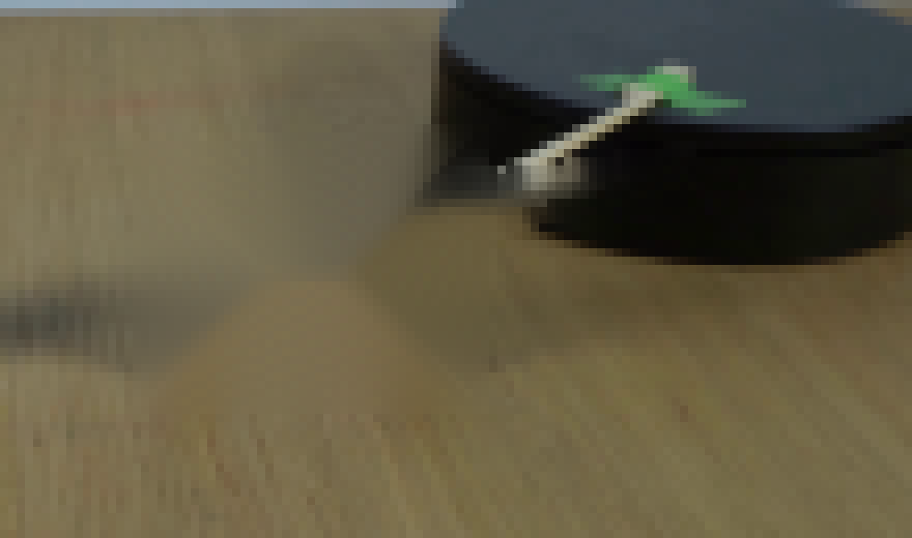
视觉工具实际返回图片 21
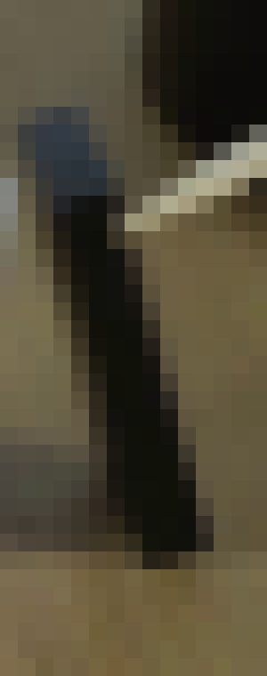
视觉工具实际返回图片 22

视觉工具实际返回图片 23

视觉工具实际返回图片 24
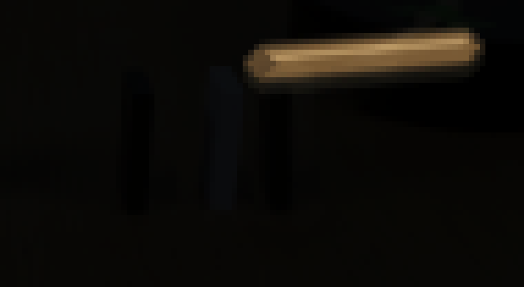
视觉工具实际返回图片 25
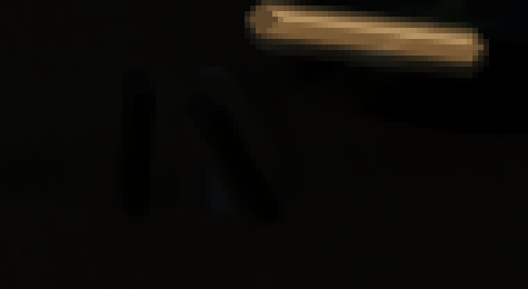
视觉工具实际返回图片 26
视觉工具实际返回图片 27
视觉工具实际返回图片 28
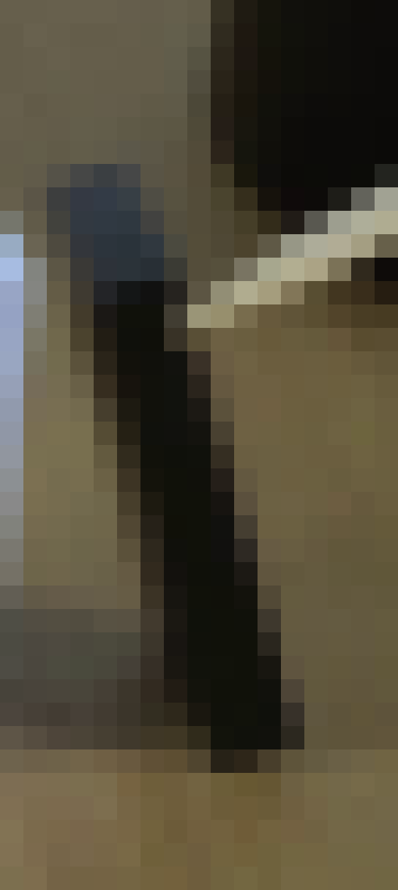
视觉工具实际返回图片 29
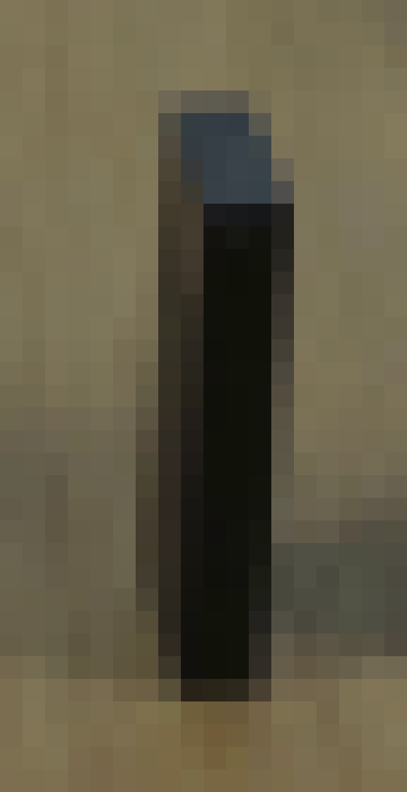
视觉工具实际返回图片 30
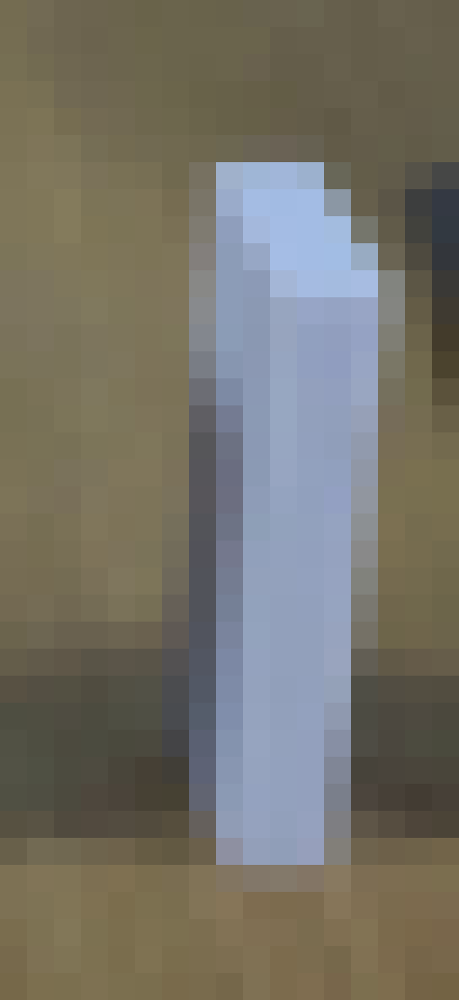
视觉工具实际返回图片 31
视觉工具实际返回图片 32
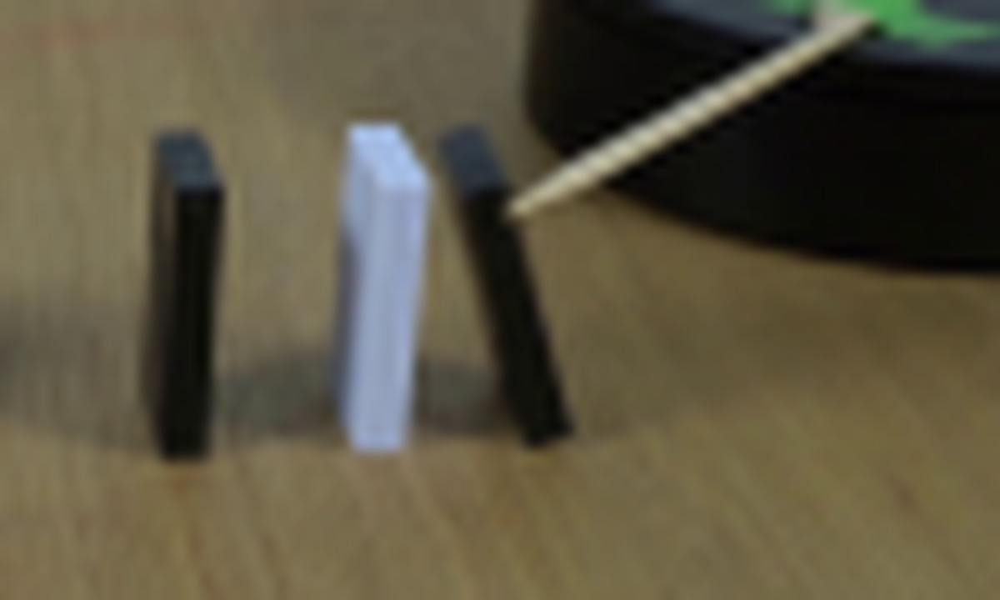
视觉工具实际返回图片 33

视觉工具实际返回图片 34
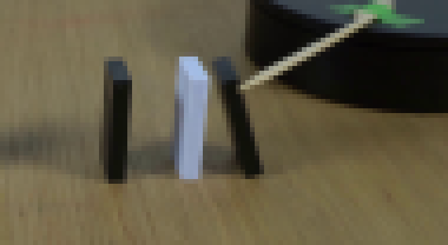
视觉工具实际返回图片 35
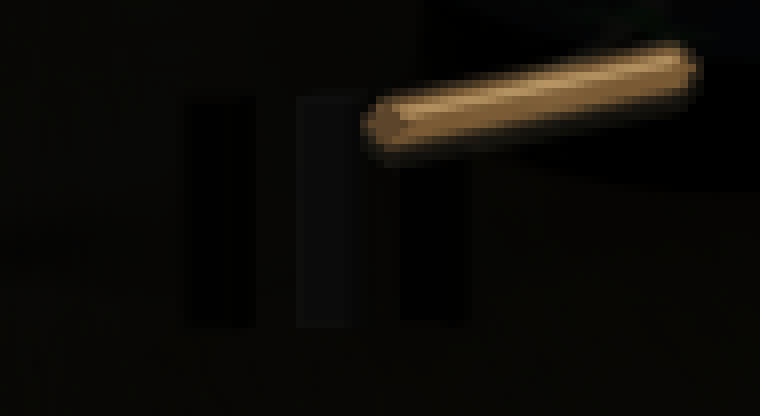
视觉工具实际返回图片 36
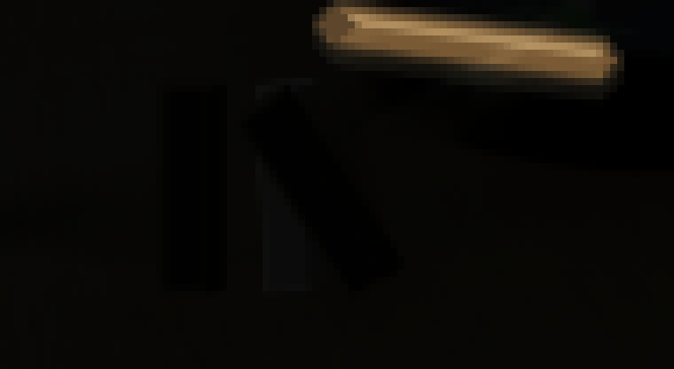
视觉工具实际返回图片 37
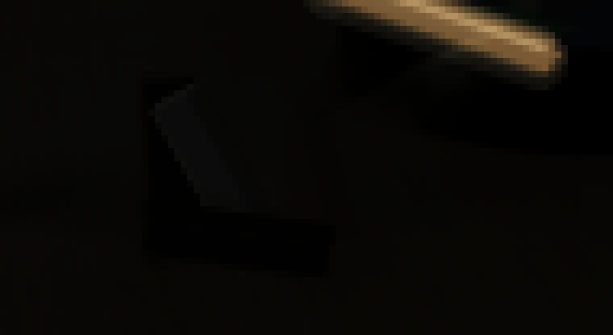
视觉工具实际返回图片 38
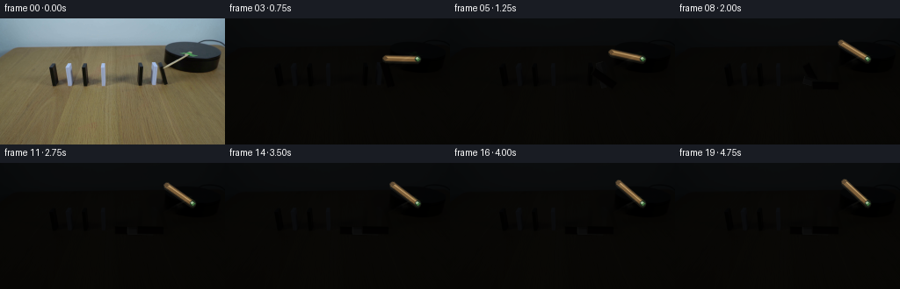
视觉工具实际返回图片 39
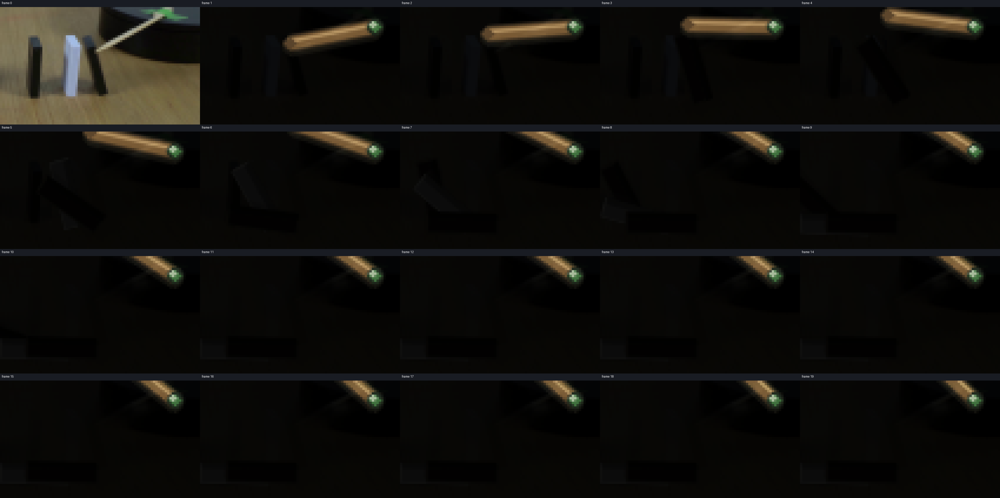
保存候选 3 份；完成命令 42 次；可验证图片返回 39 张。原始 API 响应与完整日志保留在本地。